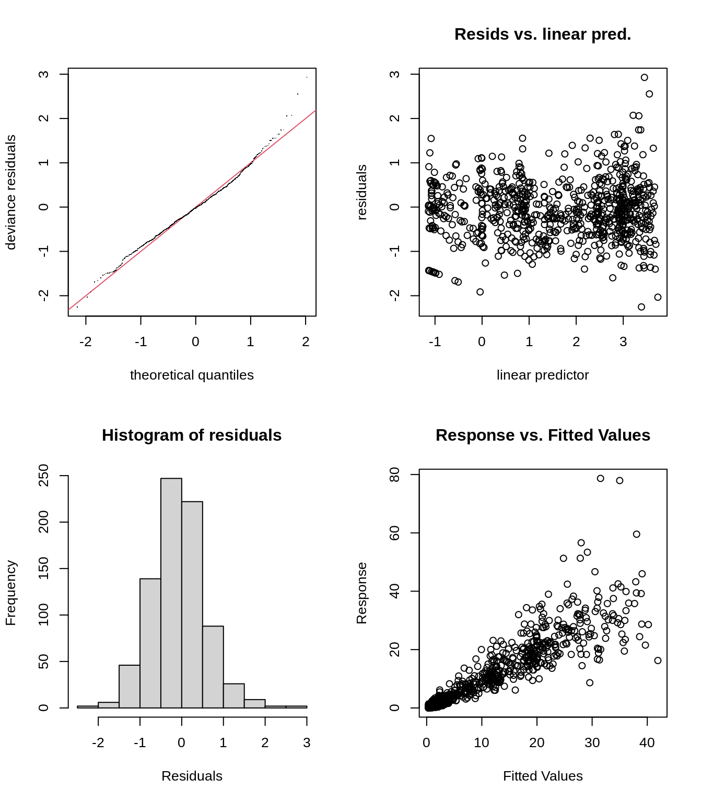

Chapter 9 Other distributions
We need a probability distribution that allows the variance to increase with the mean.
One family of distributions that has this property and that works well in a GAM is the Tweedie family. A common link function for Tweedie distributions is the \(log\).
As in a GLM, we can use the family = argument in gam() to fit models with other distributions (including distributions such as binomial, poisson, gamma etc.).
To get an overview of families available in mgcv:
9.1 Challenge 3
- Fit a new model
smooth_interact_twwith the same formula as thesmooth_interactmodel, but with a distribution from the Tweedie family (instead of the Normal distribution) andloglink function. You can do so by usingfamily = tw(link = "log")insidegam(). - Check the choice of
kand the residual plots for the new model. - Compare
smooth_interact_twwithsmooth_interact. Which one would you choose?
As a reminder, here is our smooth_interact model:
# Hint! Because the Normal distribution is the default
# setting, we have not specified the distribution in this
# workshop yet.
# Here is how we would write the model to specify the
# Normal distribution:
smooth_interact <- gam(Sources ~ Season + s(SampleDepth, RelativeDepth,
k = 60), family = gaussian(link = "identity"), data = isit,
method = "REML")9.1.1 Challenge 3: Solution
1. First, let us fit a new model with the Tweedie distribution and a log link function.
smooth_interact_tw <- gam(Sources ~ Season + s(SampleDepth, RelativeDepth,
k = 60), family = tw(link = "log"), data = isit, method = "REML")
summary(smooth_interact_tw)$p.table## Estimate Std. Error t value Pr(>|t|)
## (Intercept) 1.3126641 0.03400390 38.60333 8.446478e-180
## Season2 0.5350529 0.04837342 11.06089 1.961733e-26## edf Ref.df F p-value
## s(SampleDepth,RelativeDepth) 43.23949 51.57139 116.9236 02. Check the choice of k and the residual plots for the new model.
Next, we should check the basis dimension:
## k' edf k-index p-value
## s(SampleDepth,RelativeDepth) 59 43.23949 1.015062 0.855We should also verify the residual plots, to verify whether the Tweedie distribution is appropriate:

##
## Method: REML Optimizer: outer newton
## full convergence after 3 iterations.
## Gradient range [-0.0007646676,0.0001600484]
## (score 1791.138 & scale 0.4355231).
## Hessian positive definite, eigenvalue range [12.02444,492.4714].
## Model rank = 61 / 61
##
## Basis dimension (k) checking results. Low p-value (k-index<1) may
## indicate that k is too low, especially if edf is close to k'.
##
## k' edf k-index p-value
## s(SampleDepth,RelativeDepth) 59.0 43.2 1.02 0.81The residual plots do look much better, but it is clear that something is missing from the model. This could be a spatial affect (longtitude and latitude), or a random effect (e.g. based on Station).
3. Compare smooth_interact_tw with smooth_interact. Which one would you choose?
## df AIC
## smooth_interact 49.47221 4900.567
## smooth_interact_tw 47.86913 3498.490AIC allows us to compare models that are based on different distributions!
The AIC score for smooth_interact_tw is much smaller than the AIC score for the smooth_interact. Using a Tweedie instead of a Normal distribution greatly improves our model!